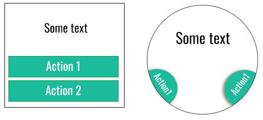

Components¶
This section describes the components such as actions, views and data requests.
Views¶
Generally, views are made using predefined templates that do not determine the layout or the look of the rendered screen. Instead, a developer should follow sematic guidelines, only carring some styling tips (such as background image). Most of use cases are predefined, but there is also a way to create own, personalized view, using the simple templating system - a simple, QML-like layout system written in JSON. There is a whole section about it, please see Templating system.
Such an approach allows the application to maintain the watch’s look and feel, making the experience more native. Wearables are not as uniform as smartphones.
For example, pictures below show different views rendered from the same code sent to the device:
{
"type":"view",
"targetPackage":"some.long.package.name",
"data":{
"name":"main",
"datatype":"text",
"significant":"",
"minor":"I should buy some milk",
"actions":[
{"name":"ok","callback":"ok"}
]
}
}
Using the library:
val actions = mutableListOf(
Action({
//some code that will execute after an action is activated
},"ok","ok", "" )
)
val view = TextView("main", "", "I should buy some milk",actions, onBack =
{
//some code that will exeute on after user chooses to go back.
}
)
The datatype here is text - that implies that there should be just text, maybe with some additions as image in the background (not carried there though).
Actions¶
What is an action?¶
The simplest way to think about it is to treat an Action as a button. It does not need to be a button though! Each device can interpret it in a native way.
On this picture, both rendered screen are equivalent. It is up to the device how to render the actions and the view (see Views).
This approach allows the application to integrate with custom controls on the watch, let it be a rotating circle, touch screen or anything you could imagine.